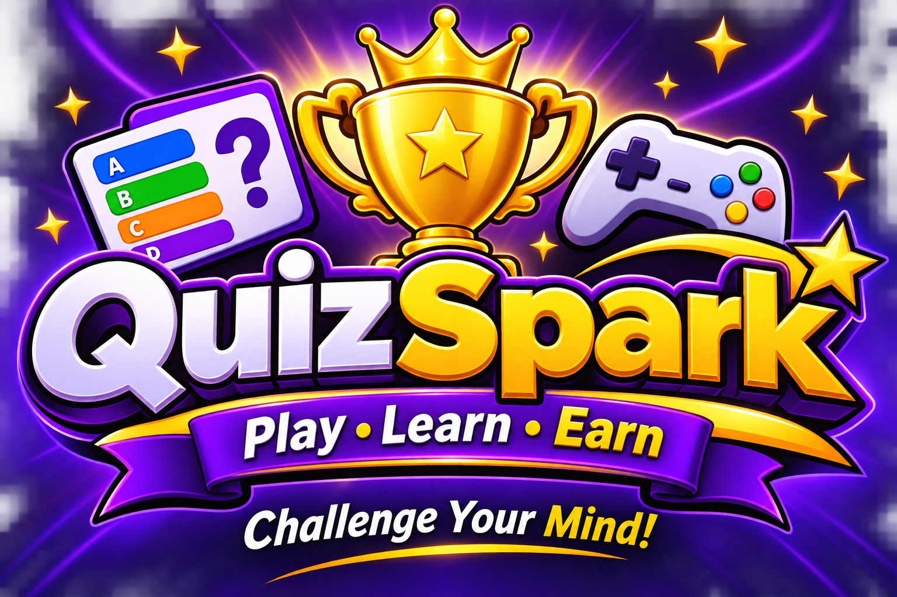

Play Quizzes
Test yourself across different subjects and difficulty levels.

⚡ QuizSparkLearn more. Play more. Grow smarter. Build knowledge one question at a time.
Build your knowledge, discover original stories and celebrate every milestone — at your own pace.
Test yourself across different subjects and difficulty levels.
Explore lessons and check what you've learned with short quizzes.
Discover original stories from Nigeria and countries around the world, one page at a time.
Earn in-app points, unlock achievement badges and follow your progress.
✨ Free to get started · Your progress and achievements are part of your QuizSpark account · Points are in-app rewards, not cash.
Your country helps us understand where QuizSpark players are joining from.
Discover something new every day. Learn, play and challenge yourself.
A fresh question every day. Give it your best!
Share your opinion with the QuizSpark community.
Know someone who loves quizzes, stories and learning? Invite them to play and grow with our community.
Every milestone is worth celebrating. Keep learning to unlock more badges.
A little learning every day makes a difference.
Enjoying the game? Give QuizSpark a star rating and tell us what you think.
You can submit one review. You can update your rating or comment later.
0 reviews
Step into unforgettable worlds, meet remarkable characters and discover stories that stay with you. Choose a book, read one page at a time, and return whenever you like — your reading place is saved on this device.
Travel through fiction from around the world — from the busy streets of Lagos to quiet villages, distant cities and mysterious coastlines. Discover courage, love, friendship, family, mystery, adventure and second chances in original stories created for curious readers.
Every book unfolds page by page. Take your time, follow each character's journey and pick up exactly where you left off. This library keeps growing, with new books and chapters added along the way.
Save specific pages and return directly to them whenever you want. Bookmarks stay on this device.
0 of 1 books completed toward Beginner Reader
Open a story and read each day to build your streak.
Monday – Sunday
Your reading days will appear here.
Your reading progress is counted on this device. Pages reached means the furthest page saved in each book.
Books you have finished will appear here. Finish the final page and tap “Finish Book” to add a story.
Your latest books are saved on this device. Pick up where you left off.
Search the library or narrow your choices by country and genre.
Your decisions change what happens next. Try different choices to discover new endings.
Your current choice path is saved on this device.
Page 1 of 1
Write what you think about this story, what you learned, or a question you want to remember. Your note is private and saved only on this device.
A growing learning library for school learners, curious adults and lifelong learners. Explore courses from beginner to advanced, then learn through books, written lessons, educational videos and quizzes.
Existing lessons and quizzes open in the Learning Centre. Additional course lessons will be added in stages.
Read relevant QuizSpark books and learning material.
Study clear lessons and mark your progress.
Find educational videos for the topic you are studying.
Test your knowledge with quizzes and track achievements.
QuizSpark certificates recognise learning milestones on this platform. They are certificates of completion, not accredited university degrees or professional licences.
Explore useful subjects and develop skills at your own pace.
Choose an area above.
Answer five questions about this lesson. Each correct answer is worth 10 points.
Explore questions from around the world. Choose a category and progress through three challenge stages.
Everyone gets the same five daily questions. Complete the challenge once per day and see how your score compares with other players. Your normal quiz points are still earned for correct answers.
Loading today's scores…
Begin as a Beginner and unlock higher levels as you improve.
Earn 10 points for every correct answer. Questions cover countries and cultures around the world. Your unfinished quiz is saved on this device.
Celebrate progress and see the top QuizSpark players.
Keep track of your learning and gaming points.
Your points balance
Points are in-app rewards. They are not cash and cannot currently be withdrawn.
Earn certificates by completing quizzes and building strong results. Download an unlocked certificate, then print it or save it as a PDF.
Your certificate progress will appear here.
A snapshot of your recent quiz performance and what to practise next.
Complete a quiz to discover your strongest subject.
Your practice recommendation will appear here.
Your subject progress will appear after your first quiz.
Your latest quiz results are saved on this device.
Complete a quiz to see your results here.
Games played: 0
Correct answers: 0
Lessons completed: 0